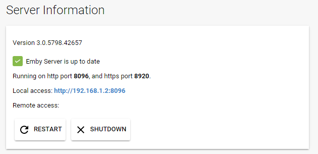
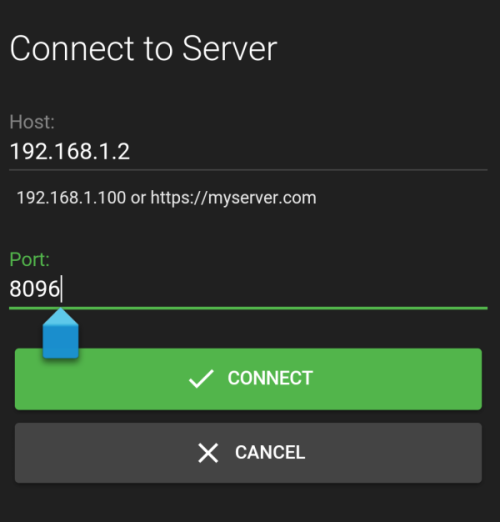

Verbindung
Zweck dieses Dokuments ist es, zu erläutern, wie man von zusätzlichen Geräten aus eine Verbindung zum Emby Server herstellen kann, sowohl innerhalb Ihres Heimnetzwerks als auch extern. Um zu erfahren, wie Sie Benutzern Zugriff auf Ihren Server gewähren, siehe Benutzer.
In den meisten Fällen müssen Sie nichts tun, um von anderen Geräten aus eine Verbindung zu Ihrem Server herzustellen, da Emby-Apps so konzipiert sind, dass sie automatisch wissen, wie sie eine Verbindung herstellen können. Auf einigen Systemen kann jedoch eine manuelle Konfiguration erforderlich sein. Dieses Dokument ist hauptsächlich als Unterstützung bei der Fehlersuche gedacht, wenn die automatischen Funktionen nicht funktionieren.
Verbindungen im Netzwerk
Die meisten Emby-Apps können Ihren Emby Server in Ihrem Heimnetzwerk automatisch entdecken, sodass in diesen Fällen nichts weiter getan werden muss. Sollte dies nicht funktionieren, können Sie dennoch eine Verbindung zu Ihrem Emby Server herstellen, indem Sie die Adresse des Servers manuell eingeben.
Um die interne Adresse Ihres Servers zu finden, öffnen Sie einfach das Emby Server Dashboard auf der Emby Server Maschine, üblicherweise http://localhost:8096.
Die lokale Adresse Ihres Emby Servers wird dann im Feld Lokale Adresse angezeigt.

Diese Informationen können dann in die Emby-Apps eingegeben werden:

Es wird empfohlen, dass die lokale IP-Adresse der Emby Server Maschine fixiert wird. Verwenden Sie die DHCP-Reservierungsfunktion des Routers, um dies zu tun. Hier ist eine allgemeine Anleitung dafür: https://portforward.com/dhcp-reservation/#how-to-make-a-dhcp-reservation-in-your-router
Wenn Sie einen VPN auf Ihrem Router haben, können die Anfragen, die aus dem lokalen Netzwerk an den Server gestellt werden, nicht als lokal erscheinen. In diesem Fall muss die Netzwerkserver-Option "Erlaube Fernverbindungen zu diesem Emby Server" aktiviert werden. Falls kein tatsächlicher externer Fernzugriff erforderlich ist, müssen Sie sicherstellen, dass "Automatische Portweiterleitung aktivieren" in den Server-Netzwerkeinstellungen deaktiviert ist und keine manuelle Portweiterleitung im Router hinzugefügt wird. Die Option "Erlaube Fernverbindungen zu diesem Emby Server" muss auch in den Benutzereinstellungen aktiviert werden.
Fehlersuche bei internen Verbindungen
Wenn das Obige immer noch nicht funktioniert, stellen Sie bitte sicher, dass der Computer, auf dem der Emby Server läuft, eingeschaltet ist und dass die Emby Server-Anwendung ausgeführt wird.
Ein nützlicher Test ist der Versuch, einen Webbrowser auf einem anderen Gerät wie einem anderen Computer, Smartphone oder Tablet zu verwenden. Sie müssen sicherstellen, dass das andere Gerät mit demselben WLAN verbunden ist. Versuchen Sie, auf diesem Gerät einen Webbrowser zu öffnen und die lokale Adresse manuell einzugeben:

Wenn dies immer noch nicht funktioniert, blockiert höchstwahrscheinlich die Firewall auf dem Server den Zugriff. Nachfolgend finden Sie eine Liste der Schritte zur Problembehebung, die zur Behebung dieses Problems durchgeführt werden können.
TCP-Port 8096 in der Firewall Ihres Servers öffnen
Wenn Sie Windows verwenden, müssen Sie höchstwahrscheinlich die Windows-Firewall konfigurieren. Siehe Wie man einen Port in der Windows-Firewall öffnet.
Wichtig: Versuchen Sie nicht, diesen Schritt zu überspringen, indem Sie die Windows-Firewall deaktivieren, da dies in der Regel mehr schadet als nützt.
Wenn Sie eine Firewall-Software von Drittanbietern verwenden, müssen Sie die entsprechenden Anweisungen befolgen, um den Port zu öffnen. Hinweis: Wenn Sie Antivirus-Software von Drittanbietern wie Norton Internet Security verwenden, hat diese in der Regel eine eigene Firewall, die konfiguriert werden muss.
Antivirus-Scan durchführen
Wenn Sie sicher sind, dass Sie den Port geöffnet haben und immer noch keine Verbindung herstellen können, überprüfen Sie als nächstes, ob der Server frei von Viren und Malware ist. Siehe Antivirus-Software.
Externe Verbindungen
Emby Server ermöglicht es Ihnen auch, eine Verbindung herzustellen, wenn Sie nicht zu Hause sind. Wir nennen diese externen Verbindungen, da sie außerhalb unseres Heimnetzwerks liegen. Bevor wir beginnen, gehen wir davon aus, dass alles, was im Abschnitt Verbindungen im Netzwerk beschrieben ist, mit Ihrem Emby Server korrekt funktioniert und dass Sie mit anderen Geräten in Ihrem Heimnetzwerk eine Verbindung herstellen können. Wenn nicht, sollten Sie diesen Abschnitt zuerst durchgehen.
Der Artikel Fernsetup beschreibt, wie der Fernzugriff aktiviert wird und die Option zur automatischen Portweiterleitung mit der uPnP-Funktion des Routers.
Ihre externe Adresse finden
Ihre externe Adresse wird auf der Startseite des Server-Dashboards angezeigt und ist als Fernzugriff gekennzeichnet. Diese Adresse sollten Sie verwenden, wenn Sie nicht zu Hause sind.
Ihre externe Adresse testen
Der einfachste Weg, um Ihre externe Adresse zu testen, besteht darin, sie in einem Webbrowser zu öffnen, während Sie nicht zu Hause sind oder innerhalb Ihres Hauses mit einem Smartphone oder Tablet, bei dem die WLAN-Verbindung deaktiviert ist.
Wichtig: Das Testen Ihrer externen Adresse im Haus könnte nicht funktionieren, und das ist in Ordnung. Einige Internet-Router deaktivieren Loopback-Fähigkeiten (nach außen gehen und wieder zurückkommen), daher könnten Sie dies nicht vom Heimnetzwerk aus testen. Es ist wichtig, dass Sie dies außerhalb des Hauses oder mit der deaktivierten WLAN-Verbindung Ihres Smartphones oder Tablets testen.
Wenn die externe Adresse in einem Browser funktioniert, ist alles in Ordnung und Sie können mit der Verbindung über Emby-Apps fortfahren.
Portweiterleitung einrichten
Wenn Sie nach den oben genannten Tests immer noch keine Verbindung herstellen können, müssen Sie möglicherweise die Portweiterleitung mit Ihrem Router einrichten, um die externe Konnektivität zu Ihrem Emby Server zu ermöglichen.
Dazu schalten Sie die Option „Automatische Portweiterleitung aktivieren“ aus und öffnen die Weboberfläche Ihres Routers. Sie müssen TCP Port 8096 auf Ihrem Router an Port 8096 auf der Emby Server Maschine weiterleiten. Dasselbe gilt für Port 8920 (wenn SSL verwendet wird). Es ist wichtig, dass sich die lokale IP-Adresse der Emby Server Maschine nicht ändert. Verwenden Sie die DHCP-Reservierungsfunktion des Routers dafür.
Wenn Sie andere öffentliche Portnummern verwenden möchten, siehe Netzwerk (Hosting) Einstellungen. Wenn Sie mehr als einen Emby Server in Ihrem lokalen Netzwerk haben und die manuelle Portweiterleitungsmethode erforderlich ist, ist es notwendig, von den standardmäßigen öffentlichen Portnummern abzuweichen, da jeder Server eine andere öffentliche Portnummer haben muss.
Wenn Sie mehr als einen Router haben, z. B. einen vom Internetanbieter bereitgestellten und Ihren eigenen Router, führt dies zu einem doppelten NAT, was zu einem Scheitern des externen Serverzugriffs führen würde. In solchen Fällen empfiehlt es sich, einen der Router, z. B. den Anbieter-Router, im Modem-/Bridge-Modus zu betreiben. Wenn beide als Router betrieben werden müssen, wird die Konfiguration komplizierter, da die Portweiterleitung für den öffentlichen Port vom ersten auf den zweiten Router kaskadiert werden muss und die tatsächlich erforderliche Portweiterleitregel auf dem zweiten Router zu setzen ist. Außerdem muss der zweite Router eine DHCP-Reservierung beim ersten Router haben.
Der Prozess der Portweiterleitung wird für jedes Routermodell etwas unterschiedlich sein. Hier sind gute Schritt-für-Schritt-Anleitungen, wie man dies macht:
https://portforward.com/dhcp-reservation/#how-to-make-a-dhcp-reservation-in-your-router http://www.wikihow.com/Set-Up-Port-Forwarding-on-a-Router
Dieses YouTube-Video erklärt es auch ziemlich gut:
https://www.youtube.com/watch?v=Kp-R-eHiQco
Öffentlichen Port überprüfen
Um zu testen, ob Ihr öffentlicher Port über das Internet erreichbar ist, versuchen Sie, ihn von canyouseeme.org zu prüfen.
Wenn dieser Test nicht erfolgreich ist, ist dies ein Hinweis darauf, dass Ihr Router den Datenverkehr blockiert und möglicherweise eine zusätzliche Konfiguration erforderlich ist.
Wenn der Test erfolgreich ist, das Gerät jedoch nicht in der Lage ist, extern eine Verbindung zum Server herzustellen, überprüfen Sie, ob Sie Fernverbindungen für den Benutzer aktiviert haben. Siehe Benutzer.
Fernzugriffskonfiguration
Sehen Sie sich den folgenden Link für ausführliche Anleitungen zur Einrichtung des Fernzugriffs auf Emby Server an Fernsetup.
Emby Connect
Unabhängig von der Methode der Portweiterleitung, ob automatisch mit uPnP oder manuell durch Konfiguration des Routers, empfehlen wir die Nutzung der Emby Connect-Funktion, da sie die Vermutungen hinsichtlich der externen Konnektivität wegnimmt. Die Emby Apps finden den Weg zum Server über Emby Connect. Siehe Emby Connect.